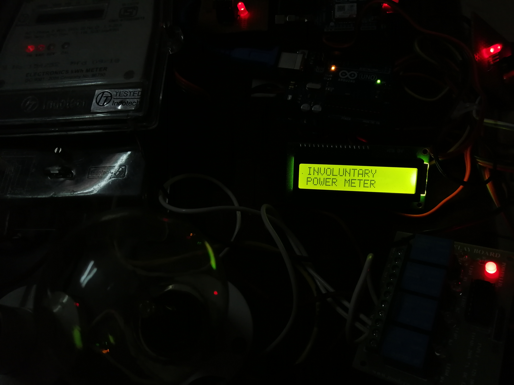
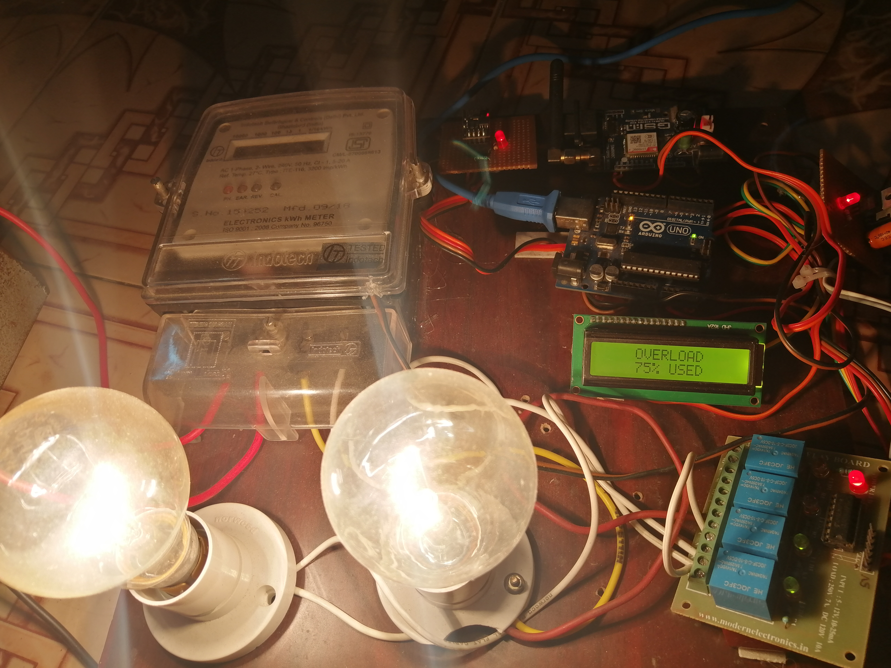
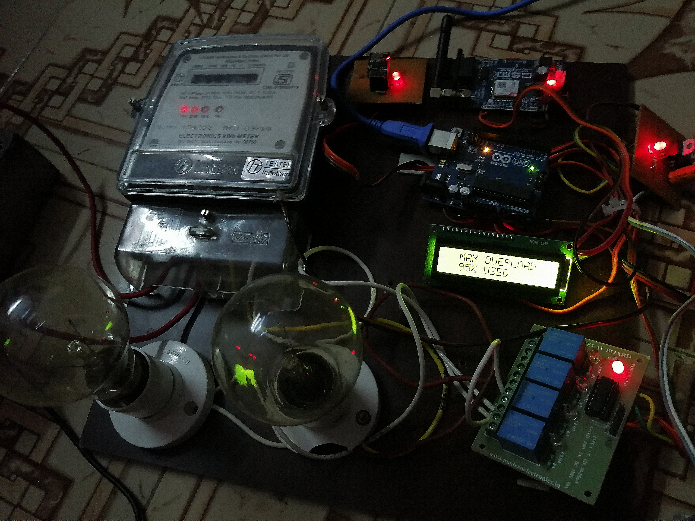

Involuntary Power Meter Lectura System
About the Project:
Energy meters are used to measure the amount
of energy consumed by domestic, commercial and sometimes industrial users.
With the growing population of energy consumers, smart meters are timely innovation which eases the energy management system.
The consumers can monitor their energy consumption in real-time, recharge their accounts, monitor tariff rates and hence improves
the demand response. Recharge System for prepaid metering was presented with focus on proffering solution to human error, processing
error as well as electromechanical errors while aims at proposing a system that will reduce the loss of power and revenue due to power
thefts and other illegal activities.This paper is about a proposed design of 230V/5A single phase prepaid energy meter which consist
of a digital energy metering device and a microcontroller used for billing and recharging. The proposed energy meter communicates with
consumer through gsm technology, every consumer is provided with a mobile application to check their usage and remaining balance.
They also get notification through sms while they reach low balance (threshold value set by the consumer) and they can disconnect
the heavy load which is directly connected to the relay through sms. If the user forgot to recharge and the balance comes to zero
all the load will cut off and consumer has to recharge to reconnect the supply.
Competition:
Won 1st price in Project contest titled as Involuntary Power Meter Lectura Systemin 6th semester.
Platform Used:
Arduino
Result of the Project:
 Title of the Project |
 75% Overload |
 95% Overload |